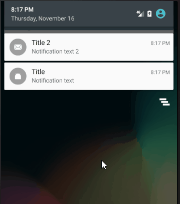
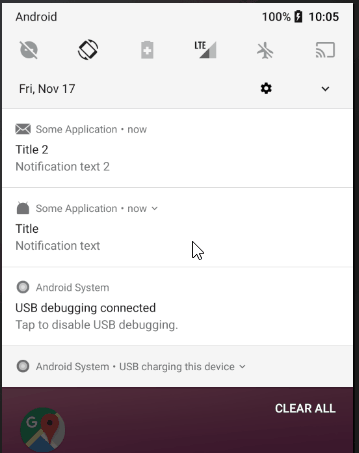
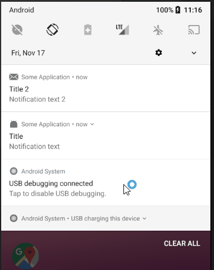

В Android 4.1 появилась возможность добавлять кнопки в уведомление.
Для этого используется метод addAction.
Intent deleteIntent = new Intent(this, MyService.class);
deleteIntent.setAction("ru.startandroid.notifications.action_delete");
PendingIntent deletePendingIntent = PendingIntent.getService(this, 0, deleteIntent, 0);
NotificationCompat.Builder builder =
new NotificationCompat.Builder(this)
.setSmallIcon(R.mipmap.ic_launcher)
.setContentTitle("Title")
.setContentText("Notification text")
.addAction(android.R.drawable.ic_delete, "Delete", deletePendingIntent);
Сначала создаем PendingIntent, который будет вызван по нажатию на кнопку. Затем передаем его в метод addAction, а вместе с ним иконку и текст для кнопки.
При раскрытии уведомления будет отображена кнопка.

По нажатию на кнопку уведомление само не закроется. Если вам необходимо его закрыть, используйте cancel в обработчике нажатия.
Вы можете добавить до трех Action кнопок. Кнопки не должны дублировать действие, которое происходит по нажатию на уведомление.
На последних версиях Android почему-то не отображается иконка кнопки, только текст.
Reply
Начиная с API 24 появилась возможность добавить в уведомление строку ввода. Это может быть удобно, например, в чат-приложениях. Пользователь сможет ответить на сообщение прямо из уведомления.
Рассмотрим пример реализации:
// id
int itemId = ...;
// Intent
Intent intent = new Intent(this, MyService.class);
intent.setAction(ACTION_REPLY);
intent.putExtra(EXTRA_ITEM_ID, itemId);
// PendingIntent
PendingIntent replyPendingIntent =
PendingIntent.getService(getApplicationContext(),
itemId, intent, PendingIntent.FLAG_UPDATE_CURRENT);
// RemoteInput
RemoteInput remoteInput = new RemoteInput.Builder(EXTRA_TEXT_REPLY)
.setLabel("Type message")
.build();
// Action
NotificationCompat.Action action =
new NotificationCompat.Action.Builder(android.R.drawable.ic_menu_send,
"Reply", replyPendingIntent)
.addRemoteInput(remoteInput)
.build();
// Notification builder
NotificationCompat.Builder builder =
new NotificationCompat.Builder(this)
.setSmallIcon(R.mipmap.ic_launcher)
.setContentTitle("Title")
.setContentText("Notification text")
.addAction(action);
// Notification
Notification notification = builder.build();
// Show notification
NotificationManager notificationManager =
(NotificationManager) getSystemService(NOTIFICATION_SERVICE);
notificationManager.notify(itemId, notification);
Разбираем код по порядку.
У нас есть некий itemId. Это может быть, например, id чата, в который пришло новое сообщение.
Создаем Intent и PendingIntent. Тут ничего нового. Мы будем вызывать сервис MyService и передавать ему itemId. В PendingIntent используем itemId в качестве requestCode.
Далее создаем RemoteInput. Здесь настраиваем все, что касается поля ввода, которое будет отображено в уведомлении. В конструкторе билдера необходимо указать ключ, который мы в дальнейшем будем использовать, чтобы из Bundle достать текст, который введет пользователь. В метод setLabel можно передать текст, который будет использован как hint (подсказка) в поле ввода.
Создаем Action кнопку с помощью билдера. Передаем туда стандартный набор: иконку, текст и PendingIntent. А в метод addRemoteInput передаем ранее созданный RemoteInput. Это будет Action кнопка Reply, по нажатию на которую будет появляться строка ввода.
Далее используем созданный Action в билдере уведомления, создаем уведомление и отображаем его.
В методе notify используем itemId. Соответственно, зная id чата, мы всегда сможем обновить или удалить уведомление.
Обратите внимание, что PendingIntent, который мы создаем и используем в Action кнопке Reply, будет использован не по нажатию на уведомление, и даже не по нажатию на Reply. Он будет использован, когда пользователь нажмет на кнопку отправки текста.
В этом примере, кстати, по нажатию на уведомление, ничего не произодет, т.к. в билдере уведомления я не использовал метод setContentIntent, чтобы не усложнять пример.
Запускаем

В уведомлении создается Action кнопка Reply. Она открывает строку ввода.
По нажатию на кнопку отправки текста система запускает MyService, который мы указывали в PedningIntent, и отображает прогрессбар. Но он будет крутиться бесконечно, пока мы программно не обновим или не удалим уведомление.
Давайте посмотрим, как в MyService мы можем получить введенный пользователем текст и убрать прогрессбар из уведомления:
if (ACTION_REPLY.equals(intent.getAction())) {
// Get reply text
CharSequence replyText = null;
Bundle results = RemoteInput.getResultsFromIntent(intent);
if (results != null) {
replyText = results.getCharSequence(EXTRA_TEXT_REPLY);
}
// Get itemId
int itemId = intent.getIntExtra(EXTRA_ITEM_ID, 0);
// Perform operations with replyText and itemId
...
// Create new notification
Notification repliedNotification =
new NotificationCompat.Builder(getBaseContext())
.setSmallIcon(R.mipmap.ic_launcher)
.setContentText("Replied")
.build();
// Update notification
NotificationManager mNotificationManager =
(NotificationManager) getSystemService(Context.NOTIFICATION_SERVICE);
mNotificationManager.notify(itemId, repliedNotification);
}
Методом RemoteInput.getResultsFromIntent достаем Bundle из Intent. Из этого Bundle можем достать текст, который вводил пользователь в уведомлении. Для этого используем ключ EXTRA_TEXT_REPLY (который ранее использовали в билдере RemoteInput).
Далее из Intent достаем itemId.
Теперь у нас есть id чата и текст, который ввел пользователь. Можем сохранить его в БД, отправить на сервер или сделать еще что-то. Это зависит от логики приложения.
Далее нам необходимо разобраться с уведомлением. Напомню, что после отправки текста оно отображает прогрессбар. В этом примере мы создаем простое уведомление с текстом Replied и заменяем им (используя тот же itemId в методе notify) то уведомление, из которого был отправлен текст.
Пробуем еще раз отправить текст из уведомления

На этот раз мы в обработчике обновили уведомление и прогрессбар пропал.
Что вы будете делать с уведомлением после отправки текста - это ваше решение. Например, вы можете просто удалить его. Либо, если вы в уведомлении отображаете последние сообщения чата, вы можете обновить это уведомление с учетом нового сообщения и снова сделать там кнопку Reply.